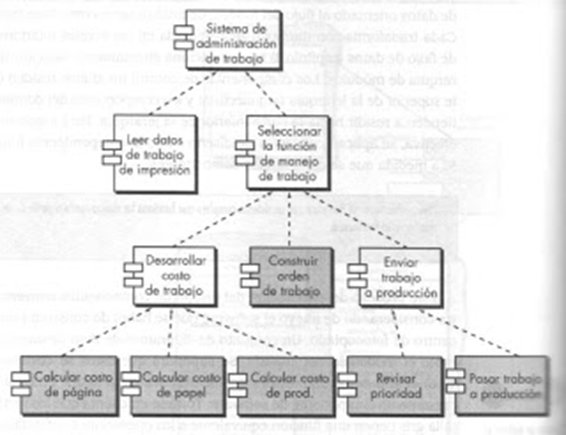
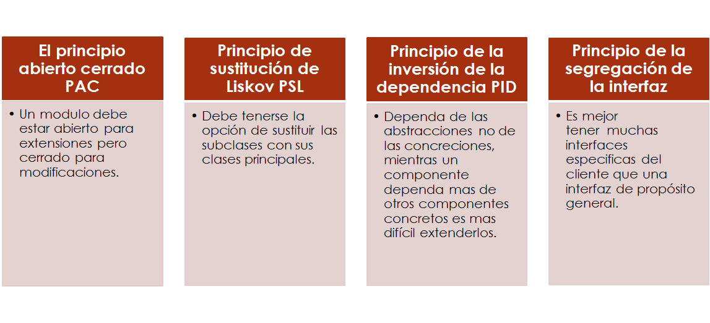
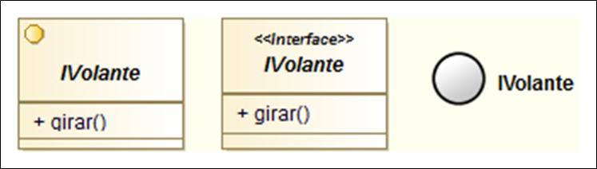
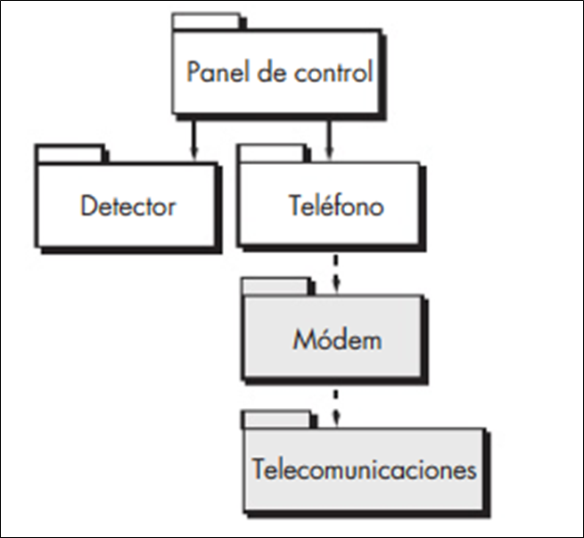

Inicio
Diseño a nivel de componentes
Objetivos
- Conocer las caracteristicas generales de el diseño a nivel de ocmponente.
- Convertir el diseño de datos, interfaces y arquitectura en un software operacional.
- Determinar la importancia del diseño a nivel de componentes.
Definicion
El diseño en el nivel de componentes define las estructuras de datos, algoritmos, caracteristicas de la interfaz y mecanismos de comunicacion asignadas a cada componente.
Permite revisar los detalles del sieño para garantizar su correcion y su consistencia con otras representaciones de diseño. se presenta a menudo despues que se ha terminado la primera iteracion del diseño arquitectonico, y el objetivo de esta fase es traducir el diseño en software operacional.
¿Què es un componente?
Es un bloque de construccion modular para el software de computo. Uuna parte modular desplegable y reemplazable de un sistema que encapsula implementacion y expone un conjunto de interfaces. Desde el punto de vista orientado a objetos un componente es un conjunto de clases ques se interrelacionan entre si. En el contexto convencional de ingenieria de software un componente es un elemento funcional que incorpora la logica del procesamiento y las estructuras internas de datos necesarios para implementar dicha logica y una interfaz que permita la invocacion del componente y el paso de los datos.
los componentes pueden ser de tres tipos:
- componente de control que coordina la invocacion de todos los demas componentes del dominio del problema
- Componenete del dominio del problema que implementa una funcion parcial o completa requerida por el cliente.
- Componente de infraestructura responsable de funciones que soportan el procesamiento requerido en el dominio del problema.
Ejemplo 1
A continuación se presenta un ejemplo de un diseño a nivel de componentes utilizando UML.

Pregunta Verdadero-Falso
Retroalimentación
Falso
Principios basico basado en el nivel de diseño de componentes.

Principios de empaquetado
- En muchos casos, los componentes o clases individuales estan organizados en subsistema o paquetes.
¿Como se debe organizarse los componentes conforme avanza el diseño?
- Principio de equivalencia de la liberación de la reutilización (PER): Agrupar clases reusables en paquetes que se puedan administrar y controlar a medida que evolucionen las nuevas versiones.
- Principio del cierre común (PCC): Las clases que cambian juntas deben mantenerse juntas. Esto lleva a un control de cambios y a un manejo de la liberación mas eficaces.
- Principio de la reutilización común (PRC):Las clases que no se reutilizan juntas no deben mantenerse juntas.
Pregunta de Elección Múltiple
Solución
Lineamientos de diseño en el nivel de componentes
Componentes: Deben definirse convenciones de asignación de nombres, los cuales provengan del dominio del sistema y tener algún significado para los participantes
Interfaces: Proporcionan información importante acerca de la comunicación y colaboración; si la representación sin restricciones de las interface complica los diagramas de componentes se recomienda:
- En lugar del enfoque formal de UML con cuadro y flecha, la interfaz se representa con una paleta
- Las interfaces deben fluir a partir del lado izquierdo del recuadro del componente
- Solo deben aparecer aquellas interfaces que sean relevantes para el componente que se esta considerando.

Dependencias y Herencia: Las dependencias se deben modelar de izquierda a derecha y la herencia de abajo (clases obtenidas) hacia arriba (clases base)
Pregunta de Selección Múltiple
Solución
Cohesion
La cohesión implica que un componente o clase solo contiene atributos y operaciones que se relacionan de cerca uno con el otro y con la clase o componente en sí. Lethbridge y Laganiére definen los siguientes tipos de cohesión:
- Funcional: Ocurre cuando un componente realiza un calculo y luego devuelve el resultado.
- De Capa: Lo tienen los paquetes, componentes y clases; ocurre cuando una capa mas alta accede a los servicios de otra mas baja (pero esta no tiene acceso a los superiores).
- De Comunicación: Todas las operaciones que aceden a los mismos datos se definen dentro de la clase, las clases se centran únicamente en los datos en cuestión, acceden a ellos y los guardan.

¿Por què es importante?
Para determinar si el programa funcionara antes de construirlo. El diseño a nivel de componentes representa el software que permite revisar los datos del diseño para su correccion y consistencia con las representacioes de diseños anteriores (diseño de datos, interfaces arquitectura). Con este diseño se proporciona un medio de evaluar el funcionamiento de las estructuras de datos, interfaces y algoritmos.
Reflexión
¿Por què crees tu que es importante el desarrollo basado en componenetes?
Conclusiones
- El proceso de diseño en el nivel de componentes incluye una secuencia de actividades que reduce el nivel de abstraccion con el que se representa el software.
- El diseño en el nivel de componenete ilustra al software en un nivel de abstraccion cercano al codigo.
- El enfoque orientado a objetos se centra en la elaboracion de clases de diseño que provienen tanto del dominio del problema como de la infraestructura.
Obra publicada con Licencia Creative Commons Reconocimiento Compartir igual 4.0